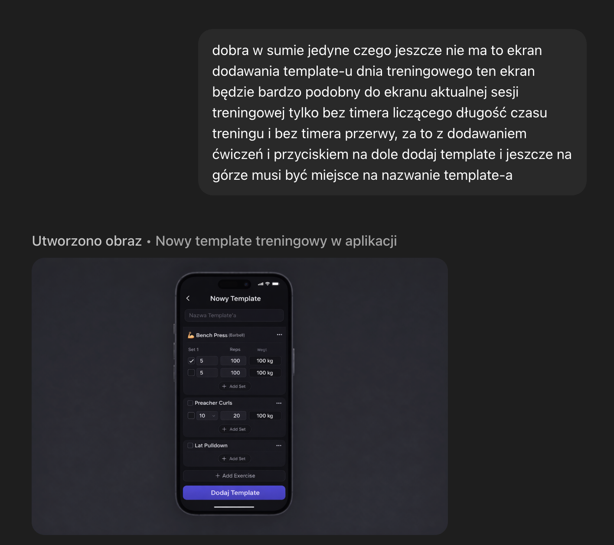
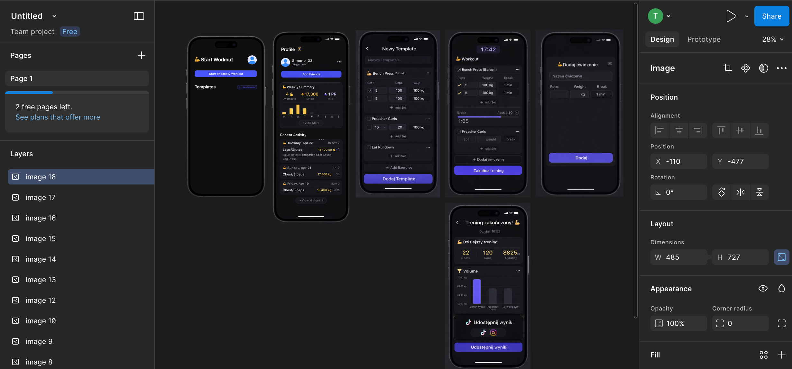
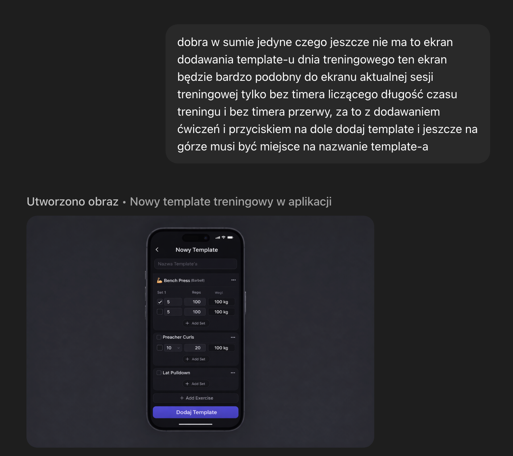
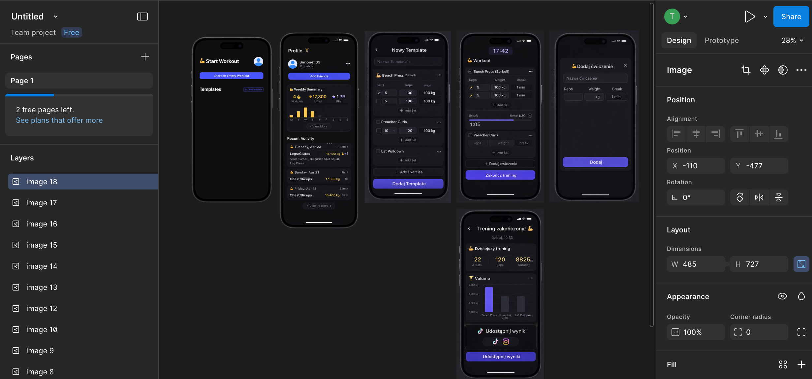
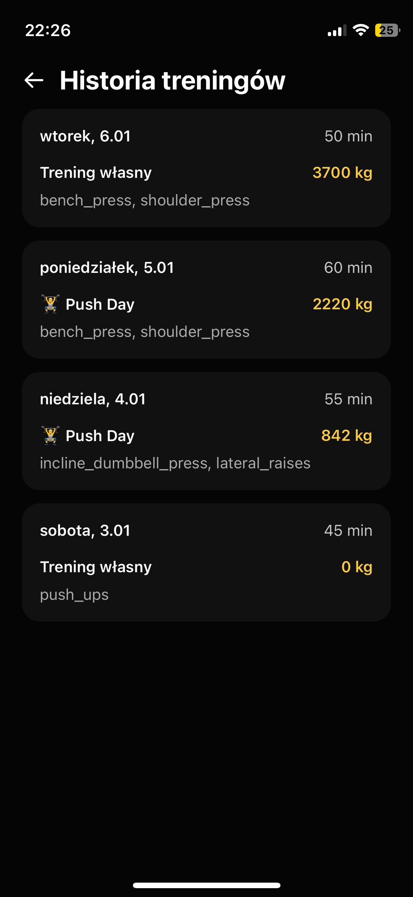
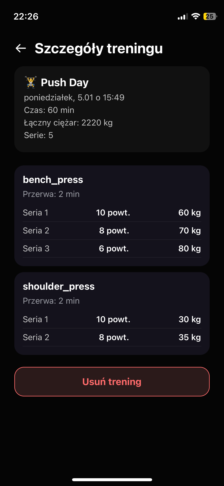

Case study: budowa aplikacji treningowej – od pomysłu na siłowni do działającego MVP
1️⃣ Skąd wziął się pomysł?
Pomysł na aplikację nie powstał przy biurku, tylko… na siłowni.
Razem ze znajomym zapisywaliśmy trening w jednej z popularnych aplikacji.
Szybko wyszło, że:
- część sensownych funkcji jest za paywallem,
- subskrypcja średnio nam się uśmiechała,
- a sama aplikacja nie do końca robiła wszystko tak, jak byśmy chcieli.
Rzuciłem wtedy pół-żartem:
„Przecież taką apkę to dziś można by zrobić na prompta”.
Chwila śmiechu, temat zamknięty.
…do wieczora.
2️⃣ Pierwsze podejście: AI + bolt.new
Tego samego dnia wrzuciłem prompta do bolt.new.
Ku mojemu zaskoczeniu:
- aplikacja faktycznie się wygenerowała,
- UI było „mniej więcej” takie, jak opisałem,
- koncept dało się kliknąć.
Ale bardzo szybko wyszły problemy:
- długie generowanie
- trudne wprowadzanie zmian
- mały limit tokenów (więcej = płatność)
- projekt postawiony na Expo, co ograniczało customizację
- brak realnej kontroli nad architekturą
Wniosek był prosty:
👉 „Da się, ale można to zrobić lepiej.”
3️⃣ Decyzja: robimy to „normalnie”
Miałem już:
- doświadczenie w React Native
- ogarnięte środowisko
- aktywną subskrypcję ChatGPT
Uznałem więc, że:
- spróbuję Codexa w VS Code
- postawię projekt na czystym React Native CLI
- potraktuję to jako realny projekt + portfolio
To był moment, w którym projekt przestał być żartem.
4️⃣ Design – pierwszy „poważny” etap
Zacząłem od designu, ale nie „na oko”.
Jak do tego podszedłem:
- screeny z tego, co wygenerował bolt
- inspiracje z App Store
- ręczne przygotowanie ekranów w chacie
Na start założyłem tylko najważniejsze ekrany.
Jak się później okazało – było ich za mało i kolejne dorabiałem już w trakcie developmentu.
 



5️⃣ Planowanie flow aplikacji (bardzo ważny moment)
W bolcie wszystko było „na prompta”.
Tutaj musiałem poukładać projekt samodzielnie.
W FigJamie przygotowałem:
- prosty chart aplikacji
- flow użytkownika
- kolejność implementacji feature’ów
- założenia pod MVP
To był pierwszy moment, gdzie:
- przestałem myśleć tylko „jak zakodować ekran”
- a zacząłem myśleć jak działa cała aplikacja
6️⃣ Dokumentacja po feature’ach
Założyłem sobie jedną rzecz, której wcześniej nigdy nie robiłem:
👉 po każdym większym feature’ze – dokumentacja
Dlaczego?
- żeby nie pogubić się przy rozroście projektu
- żeby móc wrócić do decyzji
- żeby nauczyć się pracy „bardziej profesjonalnej”
To bardzo szybko się zwróciło.
7️⃣ Start developmentu – Codex + React Native CLI
Nie pisałem wszystkiego „z palca”.
Świadomie:
- używałem Codexa
- skracałem czas pisania boilerplate’u
- skupiałem się na decyzjach i logice
Tak jak księgowy nie liczy na liczydle, tylko używa Excela.
Jeśli wiem, co robię i robiłem to wcześniej – nie ograniczam się sztucznie.
8️⃣ Pierwszy commit – 10 grudnia 2025
- utworzenie projektu React Native CLI
- konfiguracja środowiska
- sprawdzenie builda na fizycznym iPhonie przez Xcode
Od tego momentu projekt realnie istnieje.
Stan na dziś (21 stycznia 2026):
ok. miesiąc pracy, ~2 dni w tygodniu
9️⃣ Architektura: Auth Gate vs App Gate
Od początku założyłem podział aplikacji na:
- Auth Gate – logowanie / rejestracja
- App Gate – właściwa aplikacja
Co zrobiłem:
- UI logowania i rejestracji (Codex)
- podłączenie Supabase Auth
- na start tylko logowanie (rejestrację zostawiłem na później)
📌 Commit: 27 grudnia
(od 10 do 27 grudnia – przerwa, inne obowiązki)
🔟 Home screen i Workout Session (MVP)
Po zalogowaniu:
- stworzyłem Home Screen
- potem kluczowy ekran: Workout Session
MVP workoutu:
- dodawanie ćwiczeń przez input
- liczba serii
- liczba powtórzeń
- czas przerwy
- wszystko „na sucho” – bez bazy
Celem było:
👉 sprawdzenie, czy UI i flow mają sens
📌 Commit: 28 grudnia


1️⃣1️⃣ Poprawki UX + ekran podsumowania
📌 Commit: 4 stycznia
- poprawa licznika przerwy
- fix scrollowania
- ekran podsumowania treningu:
- ile kg przeniesiono
- podstawowe statystyki
To był moment „domykania” MVP UI.
1️⃣2️⃣ Powrót do rejestracji i bazy danych
Po UI wróciłem do:
- pełnej rejestracji
- faktycznego spięcia aplikacji z bazą
Musiałem:
- zrozumieć PostgreSQL (Supabase)
- zaplanować strukturę danych
- przejść z myślenia SQL / NoSQL na Postgresa
Chat pomógł mi:
- zrozumieć różnice
- dobrać strukturę tabel
- zaplanować relacje
📌 Commit: 5 stycznia
- rejestracja
- flow mailowe (confirm → browser → powrót do aplikacji)
- zmiana języka aplikacji z EN na PL
1️⃣3️⃣ Profil użytkownika i historia treningów
📌 Commit: 6 stycznia
- ekran profilu
- pobieranie historii treningów z bazy
- tygodniowe podsumowanie:
- słupki
- najcięższy dzień tygodnia
pełna historia:
- lazy loading
- 10 rekordów na scroll
To był pierwszy moment realnej pracy z danymi historycznymi.


1️⃣4️⃣ Własne API ćwiczeń (kluczowa decyzja)
Do tej pory:
- nazwy ćwiczeń wpisywane ręcznie
Szukałem API:
- większość po angielsku
- częściowo spolszczone
- płatne
- mało elastyczne
Decyzja:
👉 robię własne API
Na Vercelu:
index.json– lista ćwiczeń (lekka, pod wyszukiwarkę)- osobne JSON-y per ćwiczenie:
- gif
- tipy
- partie mięśni
- opisy
Dzięki temu:
- mam pełną kontrolę
- mogę rozwijać to pod aplikację
- API jest dokładnie „pod mój use case”
1️⃣5️⃣ Integracja API + zmiana zapisu w bazie
Po dodaniu wyszukiwarki:
- musiałem zmienić zapis treningów
- zapisywać ID ćwiczeń, nie tylko nazwy
To był moment, gdzie frontend i backend musiały się „dogadać”.
1️⃣6️⃣ Plany treningowe (UI)
- ekran dodawania planu treningowego
- na razie tylko UI
- bez zapisu do bazy
Cel: przygotowanie pod przyszły feature.
1️⃣7️⃣ Zapisywanie treningu + szczegóły historii
📌 Commit: 13 stycznia
- zapis wykonanego treningu do bazy
- ekran szczegółów treningu z historii
- możliwość usunięcia treningu
Na tym etapie:
👉 aplikacja zamyka pełny cykl treningu
🔚 Podsumowanie etapu
Na dziś:
- aplikacja nie jest jeszcze w App Store
- ale jest działającym MVP
- z realnym backendem
- z historią
- z własnym API
- z sensowną architekturą
Dalszą część case study dopiszę po wydaniu aplikacji.